자동차차체수리기능사 (2009-01-18 기출문제)
1과목: 자동차공학
1. 자동차의 차체 모양에 따른 분류로 일명 2박스카 라고도 하는 해치백세단(Hatch Back Sedan)의 형상은 어떤 것인가?
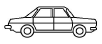
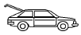
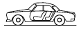
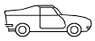
(정답률: 88%)

2. 자동차에서 사용하는 타이어 규격 표시 “2⑤ 55 R17”에서 55의 의미는?
- 최고속도 허용 시간당 55마일을 의미함
- 타이어 폭에 대한 높이의 편평비가 55% 임을 의미함
- 타이어 호칭 치수가 고압 타이어임을 의미함
- 튜브가 없는 튜브리스 타이어를 의미함
(정답률: 96%)
3. 자동차 방향지시등에 대한 설명 중 올바른 것은?
- 작동의 결함은 운전석에서 확인하지 못하는 구조로 되어 있다.
- 작동은 확실하여야 하고 임의로 조작할 수 없는 구조이어야 한다.
- 방향지시등은 자동차의 진로 변경을 다른 자동차나 보행자에게 알려주기 위한 것이다.
- 등색은 녹색이어야 한다.
(정답률: 93%)
4. 반드시 시동을 건 상태에서 점검해야하는 항목은?
- 엔진오일과 파워스티어링 오일의 양
- 자동변속기 오일과 냉각수의 양
- 엔진의 냉각수와 자동변속기 오일의 양
- 자동변속기와 파워스티어링 오일의 양
(정답률: 79%)
5. 가스를 한곳에 모아 분배하기 위한 덕트나 파이프를 말하는 것은?
- 소음기
- 매니폴드
- 가변흡기 제어장치
- 개스킷
(정답률: 85%)
6. 다음 중 작용·반작용의 관계가 아닌 것은?
- 두 자석 사이에 작용하는 힘
- 조정 경기를 할 때 선수가 젖는 노와 물 사이에 작용하는 힘
- 책상 위에 놓인 물체에 작용하는 중력과 수직 항력
- 달리기 할 때 스타팅 블록과 사람이 발 사이에 작용하는 힘
(정답률: 82%)
7. 아래 그림에서 얼라이먼트 각도를 나타내는 것은?
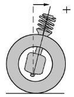
- 캠버
- 캐스터
- 토(toe)
- 스러스트 각
(정답률: 87%)
8. 모노코크 바디의 각부 구조 중 프런트 바디 패널 구분으로 적합하지 않은 것은?
- 후드 패널
- 라디에이터 서포트 패널
- 쿼터 패널
- 에이프런 패널
(정답률: 78%)
9. 크랭크축의 반경이 R, 작용하는 힘이 F일 때 엔진 회전력 T를 구하는 공식은?
- T = F × R
- T = F ÷ R
- T = F + R
- T = F – R
(정답률: 93%)
10. 모노코크 바디의 특징이 아닌 것은?
- 차량의 중량을 가볍게 한다.
- 차실 바닥 면을 낮출 수 있다.
- 충돌에너지를 차체 전체로 분산시킨다.
- 주행소음의 차단 효과가 좋다.
(정답률: 74%)
11. 산소, 아세틸렌가스를 이용하여 패널을 절단하려고 한다. 이때 절단 작업이 잘 이우러지기 위한 사항 중 옳은 것은?
- 모재의 산화 연소하는 온도가 그 금속의 용융점보다 낮을 것
- 생성된 금속 산화물의 용융온도는 모재의 용융 온도보다 높을 것
- 생성된 산화물은 유동성이 좋아야 하고 그것이 산소 압력에 의해 잘 밀려 나가지 말아야 한다.
- 금속의 화합물 중 연소되지 않은 물질이 많을 것
(정답률: 47%)
12. 스폿(spot)용접에서 전극부의 팁 직경은 무엇에 따라 결정되는가?
- 전류의 세기
- 암의 형상
- 판의 두께
- 용접 시간
(정답률: 65%)
13. 철에 얼마나 탄소가 함유된 것을 탄소강이라 하는가?
- 0.01% ~ 0.03%
- 0.035% ~ 1.7%
- 2.3% ~ 3.5%
- 25% ~ 35%
(정답률: 80%)
14. 도면을 나타낼 때 전단면에 대한 설명으로 틀린 것은?
- 물체의 전면을 절단한 것이다.
- 물체의 전면을 단면도로 표시하는 것이다.
- 단면선을 30°로 긋는 것을 원칙으로 한다.
- 중심선을 지나는 절단평면으로 전면을 자르는 것이다.
(정답률: 75%)
15. 다음 그림에서 전개도는 어떻게 나타내는가?
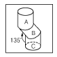
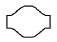
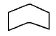
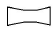
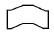
(정답률: 73%)
16. 다음 중 냉간압연 강판과 관계가 없는 것은?
- 표면이 매끄럽다.
- 가공성이 좋다.
- 800℃ 이상의 고온으로 처리한다.
- 상당히 얇은 판도 만들 수 있다.
(정답률: 88%)
17. 자동차의 재료 중 많이 쓰이는 비금속 재료는 합성수지(플라스틱)인데 그 특징을 설명한 것으로 틀린 것은?
- 착색하기가 쉽고 내구성이 있다.
- 내식성이 우수하고 열전도율이 낮다.
- 비중과 내열성이 다른 금속보다 비교적 크다.
- 가소성이 크고 대량 생산이 쉬운 장점이 있다.
(정답률: 73%)
18. 모재의 열 영향부가 경화할 때 비드 끝단에 일어나기 쉬운 균열은?
- 유황 균열
- 토(toe) 균열
- 비드 아래 균열
- 은점
(정답률: 73%)
19. 열처리 방법 중에서 저온 뜨임을 할 때의 적정온도는?
- 상온
- 150℃
- 500℃
- 600℃
(정답률: 82%)
20. 피복 금속 아크 용접기에 사용되는 용접봉의 피복제의 역할 중 틀린 것은?
- 아크의 안정, 집중 등을 향상시켜 아크 유지를 용이하게 한다.
- 용접 금속의 탈산, 정련 작용을 한다.
- 용융 금속의 응고 및 냉각속도를 급속하게 한다.
- 박리성이 좋은 슬랙을 만든다.
(정답률: 71%)
2과목: 자동차차체정비
21. 다음 공구강의 구비조건 중 틀린 것은?
- 열처리가 쉽고 단단할 것
- 고온에서 강도를 유지할 것
- 내식성이 클 것
- 강인성과 내충격성이 약할 것
(정답률: 91%)
22. 도어와 바디 사이에 부착되어 비, 바람, 물 및 먼지의 침입을 방지함과 동시에 도어 개폐시의 총격완화와 진동방지의 역할을 하는 것은?
- 도어 프레임
- 도어 웨더 스트립
- 스펀지
- 글래스
(정답률: 88%)
23. 탄산가스 아크 용접에 사용되지 않는 가스는?
- CO2
- CO2 + H2
- CO2 + O2
- CO2 + O2 + Ar
(정답률: 73%)
24. 알루미늄 합금 패널의 용접시 주의사항 및 특징으로 틀린 것은?
- 알루미늄 합금은 가열온도를 확인하기가 어렵다.
- 알루미늄 합금 패널은 열전도성이 우수하여 국부 가열이 어렵다.
- 알루미늄 합금 패널의 산화막은 손상되지 않도록 용접해야 한다.
- 알루미늄 합금의 용접부위에 기공이 발생하기 쉽다.
(정답률: 67%)
25. 비철금속 중 구리(55~65%), 아연(15~30%), 니켈(5~20%)의 합금이며, 내열성, 내식성, 가공성이 우수한 합금은?
- 로엑스(Lo-ex)
- 황동(bronze)
- 양은(nickle silver)
- 켈밋(kelmet alloy)
(정답률: 57%)
26. 모노코크 차체에 충돌이 있을 때 센터라인 상의변형은 어떤 것인가?
- 다이아몬드
- 새그
- 사이드웨이
- 트위스트
(정답률: 67%)
27. 다음 중 프레임의 비틀림 변형시 수정방법 중 제일 먼저 시도할 방법은?
- 낮은 부위에 잭이나 유압 장비를 놓고 작동 시킨다.
- 잭 위에 철판 1cm 두께를 받친다.
- 게이지를 보면서 두 개의 잭을 동시에 작동한다.
- 높이 올라간 부위를 체인으로 고정한다.
(정답률: 63%)
28. 다음 중 프레임의 기준선은 누가 독자적으로 만들어 발표하는가?
- 자동차 제작회사
- 자동차 형식담당 정부 부처
- 자동차 정비사업자
- 자동차 측정기 제작회사
(정답률: 78%)
29. 바디 프레임 수정기를 사용하여 수정할 때 차체를 붙잡을 수 있는 부속기기를 무엇이라 하는가?
- 클램프
- 잭
- 훅
- 유압 램
(정답률: 86%)
30. 트램 트랙킹(tram tracking) 게이지의 비틀림 측정에 옳지 않은 것은?
- 프레임의 마름모꼴 휨
- 앞부분의 옆으로 휨
- 리어 액슬의 흔들림
- 휠 베이스의 흔들림
(정답률: 72%)
31. 바디 수정시 교정기술에 대한 사항에서 보기의 ( )안에 각각 들어갈 내용은?
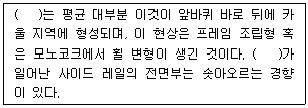
- 새그, 카울
- 피벗, 새그
- 새그, 새그
- 피벗, 카울
(정답률: 77%)
32. 자동차를 조립하는 생산라인과 같은 방식이며, 계측과 수리 작업이 동시에 가능한 프레임 수정방식은?
- 레이저식
- 유니버셜식
- 바닥식
- 지그식
(정답률: 63%)
33. 다음의 탈지제 중 알칼리성이 아닌 것은?
- 가성소다
- 탄산소다
- 염화나트륨
- 상인산소다
(정답률: 69%)
34. 도료의 건조 방법을 설명한 것 중에서 옳은 것은?
- 전기식은 청결하고 안정된 열원을 얻을 수 있으나 정비가 불편하다.
- 열풍식은 넓은 범위로 열을 전달하기 어렵다.
- 원적외선식은 효율이 좋고 건조시에도 결함이 감소한다.
- 적외선식은 고온을 얻기가 곤란하다.
(정답률: 74%)
35. 두꺼운 도막을 급격히 가열했을 때 발생할 수 있는 결함은 무엇인가?
- 크레이터형
- 핀홀
- 호올
- 침전
(정답률: 84%)
36. 다음 중 우리나라에서 단일체 구조 바디 프레임이 가장 많이 쓰이는 차종은?
- 소형승용차
- 소형화물차
- 대형승용차
- 특수차
(정답률: 86%)
37. 자동차의 프레임 중 프레임과 바디 바닥면을 일체로 한 프레임은?
- 플랫폼형 프레임
- 백본형 프레임
- X형 프레임
- H형 프레임
(정답률: 70%)
38. 프레임 사이드 멤버의 보강판이나 덧대기 판 양끝 면의 단면이 점점 좁아져 가는 이유로 가장 적합한 것은?
- 보조기구 부착을 위해
- 응력 집중을 방지하기 위해
- 크로스 멤버의 부착을 위해
- 무게의 균형을 잡기 위해
(정답률: 77%)
39. 다음 판금 퍼티작업으로 가장 옳은 것은?
- 한번에 쌓아 올리는 높이는 5mm 정도가 적당하다.
- 혼합용 정반이 없다면 판자 조각이나 두꺼운 종이를 써도 무방하다.
- 한번에 쌓아 올리는 양 만큼씩 사용하는 것보다 많은 양을 혼합해서 두고 쓰는 것이 좋다.
- 공기의 거품이 남아 있으면 도막 파열의 원인이 되므로 제거한다.
(정답률: 89%)
40. 판금가위 중 비틀림 가위는 어떻게 자를 때 사용하는가?
- 직선으로 자를 때
- 둥글게 자를 때
- 지그재그형으로 자를 때
- 직각으로 자를 때
(정답률: 79%)
3과목: 안전관리
41. 차체수리용 판금 잭의 기능 중 가장 적당한 것은?
- 밀고, 절단한다.
- 당기고, 절단한다.
- 밀고, 당기고, 절단한다.
- 밀고, 당기고, 오므리기 한다.
(정답률: 78%)
42. 윈도우 실드 교환시 그라스 실러트의 절단 설명 중 맞지 않는 것은?
- 피아노 선을 사용한다.
- 윈도우 실드 나이프를 사용한다.
- 커트 나이프를 사용한다.
- 댐 러버를 사용한다.
(정답률: 60%)
43. 계량 조색을 하기 위한 조색기기와 관계가 없는 것은?
- 전자저울
- 애지데이터 커버
- 믹싱머신
- 버프
(정답률: 80%)
44. 바디 수정시 파손의 인장 방법에서의 보기 ( )안에 각각 들어갈 내용은?
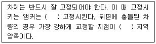
- 파손 부위에, 레인포스먼트
- 파손 부위를 피해서, 카울
- 파손 부위에, 카울
- 파손 부위를 피해서, 레인포스먼트
(정답률: 71%)
45. 승용차 손상 진단시 자도차 뒤 부분 중앙에 외력이 가해졌을 경우 우선 1차적인 점검 부위로 해당되지 않는 것은?
- 리어 플로어 부위
- 리어 라디에이터 코어 부위
- 리어 사이드 부위
- 리어 프레임 부위
(정답률: 64%)
46. 센터라인 게이지의 구성 요소로 맞는 것은?
- 센터 핀
- 센터 고리
- 센터 멤버
- 센터 눈금
(정답률: 58%)
47. 각종 숫돌 바퀴의 결합제의 조유가 아닌 것은?
- B
- H
- M
- S
(정답률: 56%)
48. 텅스텐 전극과 모재 사이에 아크를 발생시키고 알곤 가스를 공급하여 절단하는 방법은?
- TIG 아크 절단
- MIG 아크 절단
- 서브머지드 아크 절단
- 프라즈마 아크 절단
(정답률: 66%)
49. 승용차 바디 중 엔진룸을 구성하는 부품이 아닌 것은?
- 푸드 패널
- 프런트 휠 하우스
- 쿼테 아웃 패널
- 라디에이터 서포트 패널
(정답률: 74%)
50. 전기저항 스포트 용접기의 용접 암과 전극의 선택에서 주의 사항이 아닌 것은?
- 상하의 암을 평행하게 장착한다.
- 전극을 바르게 상하 정렬시킨다.
- 전극 팁의 접촉면을 완전히 평평하게 다듬질 한다.
- 용접하려고 하는 부분에 적합하고 가능한 긴 것을 사용한다.
(정답률: 83%)
51. 안전표시에 사용되는 색채에서 보라색은 주로 어느 용도에 사용하는가?
- 방화표시
- 주의표시
- 방향표시
- 방사능표시
(정답률: 88%)
52. 기계자겁시 일반적인 안전사항이 아닌 것은?
- 주유시는 지정된 오일을 사용하며, 기계는 운전을 정지시킨다.
- 고자의 수리, 청소 및 조정시에는 동력을 끊고 다른 사람이 작동시키지 않도록 표시해둔다.
- 운전 중 기계로부터 이탈할대는 운전을 정지시킨다.
- 기계운전 중 정전이 발생되었을 때는 각종 모터의 스위치를 켜둔다.
(정답률: 94%)
53. 공기기구 사용에서 적합하지 않은 것은?
- 공기기구의 활동부위에는 윤활유가 묻지 않게 할 것
- 공기기구를 사용할 때는 보호안경을 사용할 것
- 고무 호스가 꺾여 공기가 새는 일이 없도록 할 것
- 공기기구의 반동으로 생길 수 있는 사고를 미연에 방지할 것
(정답률: 63%)
54. 스패너 작업시의 안전수칙게 알맞지 않은 것은?
- 주위를 살펴보고 조심성 있게 죌 것
- 스패너를 몸 바깥쪽으로 밀지 말고 앞쪽으로 당길 것
- 스패너는 조금씩 돌리며 사용할 것
- 힘겨울 때는 스패너 자루에 파이프를 끼워서 작업할 것
(정답률: 97%)
55. 중량물을 들어 올리거나 내릴 때 손이나 발이 중량물과 지면 등에 끼어 발생하는 재해는?
- 낙하
- 충돌
- 전도
- 접착
(정답률: 73%)
56. 산소는 산소병에 몇 도에서 150기압으로 충전하는가?
- 35℃
- 45℃
- 55℃
- 65℃
(정답률: 69%)
57. 자동차를 도장할 때 안전 위생에 관한 사항 중 옳지 않은 것은?
- 퍼티 작업은 무해한 작업이므로 장소에 구애받지 않는다.
- 도료에 포함되는 유기용제를 계속 흡입하면 중독이 되어 건강을 해친다.
- 도장 부스는 작업자 자신과 공장 내의 다른 인원을 보호한다.
- 도장을 할 때는 환수캡식 또는 에어라인식의 마스크를 착용한다.
(정답률: 90%)
58. 차량 정비시 주의 사항으로 옳지 않은 것은?
- 차량 정비시 구름 방지를 위해 바퀴에 고임목을 설치한다.
- 편의장치 추가 장착시 임의 배선을 사용하면 안된다.
- 차량 성능 향상을 위해 차량을 부분적으로 개조해도 된다.
- 전기작업시 배터리 접지선을 탈거한다.
(정답률: 92%)
59. 자동차 연료탱크의 작은 구멍을 수리할 때 보기 중 가장 올바르고 안전작업 방법으로 연결된 것은?
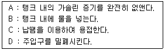
- A-B-D
- A-C-D
- A-B-C
- A-B-C-D
(정답률: 59%)
60. 차체수리 작업을 할 때 안전보호구 착용 중 잘못 설명한 것은?
- 드릴 작업할 때 손을 보호하기 위하여 장갑을 끼고 작업한다.
- 그라인더 작업할 때 반드시 보안경을 착용한다.
- 해머 작업할 때 귀마개를 착용한다.
- 퍼티를 연마할 때 방진마스크를 착용한다.
(정답률: 88%)